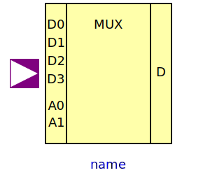
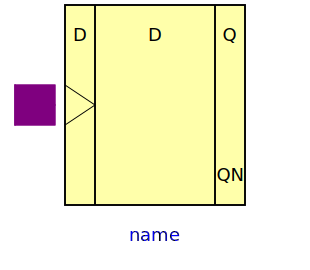
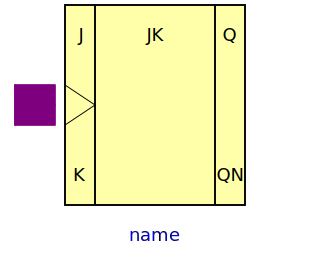
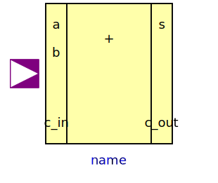
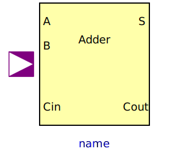
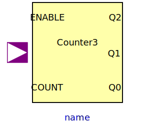
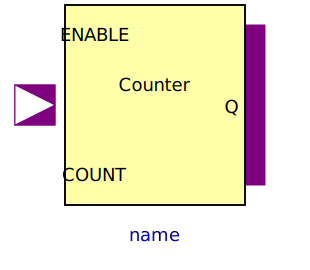

This package contains utility components used by package Examples. Each component is built up hierarchically by components of the Gates package. In this way the Gates components were tested, and their usage is demonstrated.
| Name | Description |
|---|---|
|  MUX4 | 4 to 1 Bit Multiplexer |
| Unclocked RS FlipFlop | |
| Unclocked RS FlipFlop | |
|  DFF | D FlipFlop |
|  JKFF | JK FlipFlop |
| Half adder | |
|  FullAdder | Adding circuit for binary numbers with input carry bit |
|  Adder | Generic N Bit Adder |
|  Counter3 | 3 Bit Counter |
|  Counter | Generic N Bit Counter |